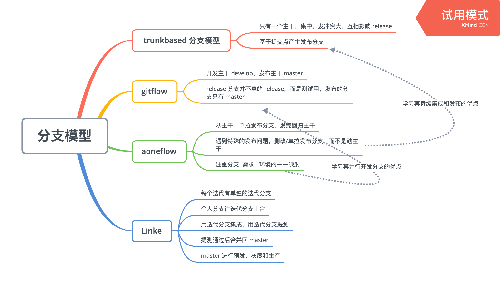

CI/CD 方法论
CI/CD 的重要性
Martin Fowler说过，“持续集成并不能消除Bug，而是让它们非常容易发现和改正。”
持续集成和持续交付作为敏捷开发的一种最佳实践，通过包括构建、部署、测试、发布流程的自动化，实现质量内建，让质量问题可以快速发现和消除，从而提升软件交付的质量和效率。
基本策略
分支模型是CICD落地的源头，研发过程各角色间的协作方式以及研发过程内代码版本的流转方式都取决于分支模型。
首先划分环境。
划分环境后设计分支，注重开发和发布两个场景。
根据分支设计流水线，验证应该发生在全流水线里。

参考文献：
《在阿里，我们如何管理代码分支？》
《What is Trunk-Based Development?》
《提升团队的微服务落地能力》
All articles on this blog are licensed under CC BY-NC-SA 4.0 unless otherwise stated.